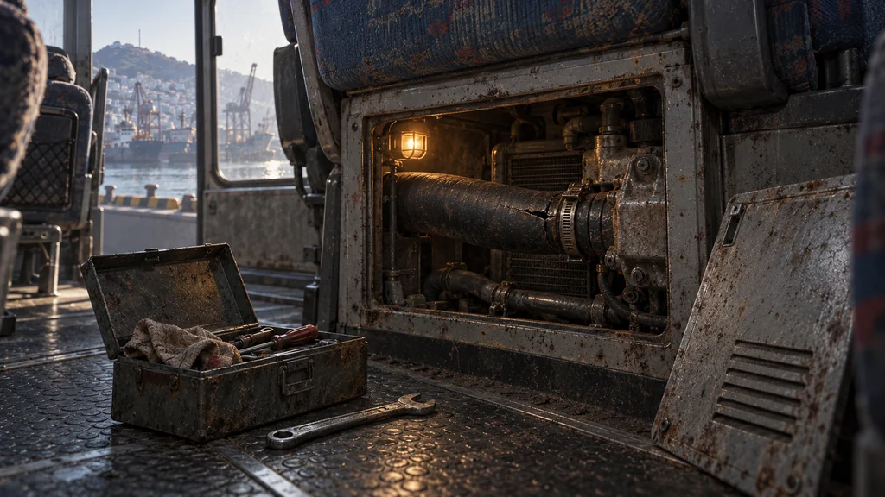
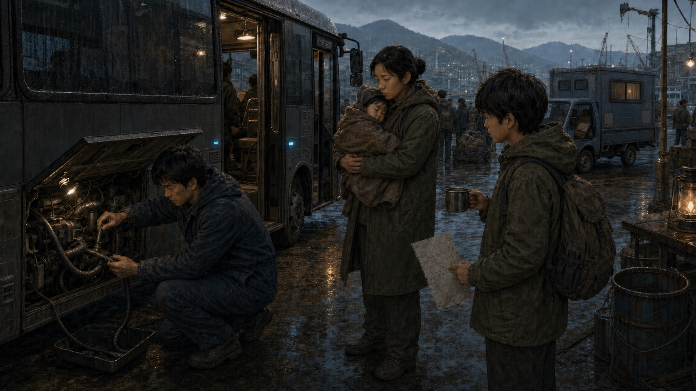

수리 선택 전 / 교체 후보
어디부터 고칠까.
부산 부두에 멈춘 버스. 열린 점검판 안에서 찢어진 난방 호스를 발견한 순간입니다.
디자인 초안 · 게임 미연결 · 승인 및 실제 게임 크롭 검수 대기
새 후보 — 아직 고치기 전

현재 수리 사건의 진입·선택 전용 후보입니다. 성공 결과에 고장 난 호스를 그대로 보여 주지 않도록 결과 그림은 따로 검토합니다.
기존 가족 그림 — 보존

수리 선택 전 / 교체 후보
부산 부두에 멈춘 버스. 열린 점검판 안에서 찢어진 난방 호스를 발견한 순간입니다.
디자인 초안 · 게임 미연결 · 승인 및 실제 게임 크롭 검수 대기

현재 수리 사건의 진입·선택 전용 후보입니다. 성공 결과에 고장 난 호스를 그대로 보여 주지 않도록 결과 그림은 따로 검토합니다.
